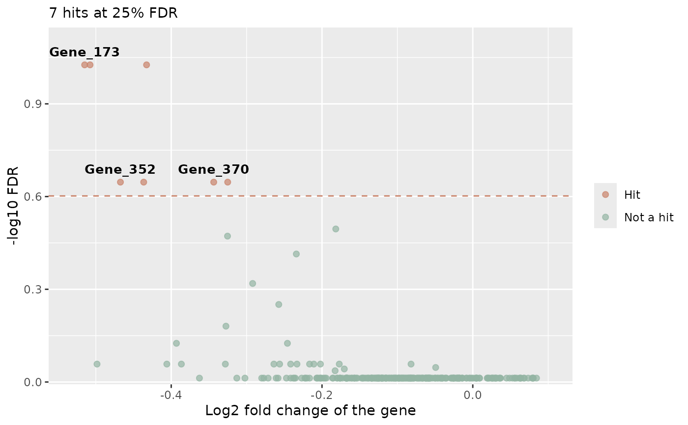
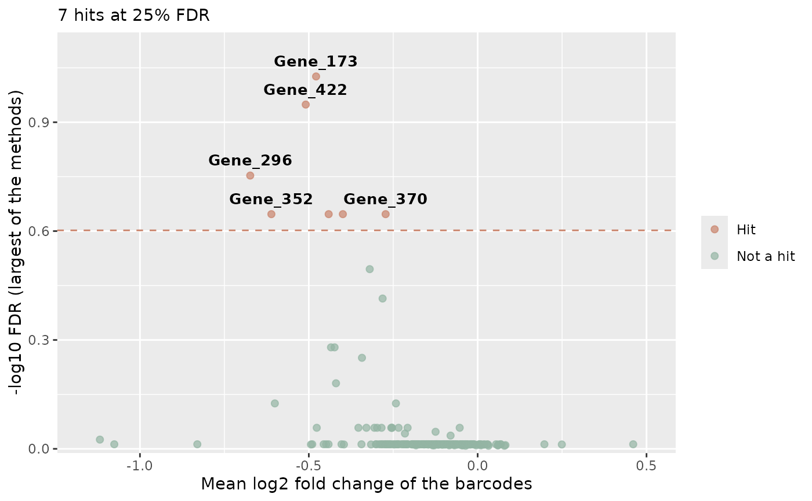

Shows every tested gene with its effect (the mean log2 fold
change of its barcodes, x axis) and its significance (-log10 FDR, y
axis), so that the hits stand out from the other genes. It works with
the table of a single method (find_roast_hit,
find_camera_hit, find_gene_zscore_hit) or
with the combined table of summarise_hits.
Usage
plot_volcano(
table,
statistics = NULL,
fdr = 0.05,
fdr_column = NULL,
labels = 10,
genes = NULL,
colors = c(Hit = "#C9836A", `Not a hit` = "#93B5A3"),
label_color = "black",
alpha = 0.7,
point_size = 1.8,
label_size = 3.5
)Arguments
- table
A table with one row for each gene and the columns Gene, the FDR (see
fdr_column) and Log2FC (unlessstatisticsis given). Computed withfdr = 1, so that it contains all the tested genes.- statistics
Optional. The barcode statistics of the comparison (
compute_barcode_statistics), with the columns Gene and Log2FC: the mean log2 fold change of the barcodes of each gene is used as its effect. Needed whentablehas no Log2FC column.- fdr
The FDR threshold that defines the hits (default 0.05), drawn as a dashed line.
- fdr_column
The column with the FDR. By default "MaxFDR" when the table has it, otherwise "FDR".
- labels
The number of hits (the most significant) labelled with their name (default 10, 0 for none).
- genes
Optional names of genes to highlight with a circle and a label, whether they are hits or not.
- colors
The colours of the hits and of the other genes.
- label_color
The colour of the labels and of the circles of the highlighted genes (default "black").
- alpha
The transparency of the points (default 0.7).
- point_size
The size of the points (default 1.8).
- label_size
The size of the labels (default 3.5).
Details
The FDR is taken from fdr_column: by default MaxFDR when
the table has it (summarise_hits: the largest FDR of the
methods, so a gene is above the dashed line only when every method
finds it) and FDR otherwise. The effect is the Log2FC column of the
table (the median log2 fold change of the barcodes for FRY, ROAST and
CAMERA, the mean for the Z-score test). The table of
summarise_hits has none: give then the barcode
statistics with statistics, and the mean log2 fold change of the
barcodes of each gene is used (also with the other tables, when
statistics is given).
Genes without an FDR (for example genes not tested by every method)
are not shown. FDRs of 0 are drawn at the smallest positive FDR of the
table. No theme is applied; choose the appearance with
ggplot2::theme_set().
Examples
data(count_table)
data(annotation_table)
# The unmapped reads "*" appear several times: remove them
counts <- count_table[count_table$Barcode != "*", ]
groups <- factor(c(
"T1/T2", "T1/T2", "Time3_TRT", "Time3_TRT", "Time3_TRT",
"Time3_CTRL", "Time3_CTRL", "Time3_CTRL", "Time4_TRT", "Time4_TRT",
"Time4_TRT", "Time4_CTRL", "Time4_CTRL", "Time4_CTRL"
))
object <- create_screenr_object(
table = counts, annotation = annotation_table, groups = groups
)
#> The Day and the Treatment of each sample are taken from the sample names (Day_Treatment_Replicate). For 2 sample(s) (Time_1, Time_2) they cannot be separated and are both set to the first part of the name. If this is not intended, give them with the sample_table argument. Check them with get_sample_table().
object <- normalize_data(object)
design <- create_design_matrix(object)
contrast <- create_contrast(design,
treatment = "Time4_TRT", control = "Time4_CTRL"
)
# One method
camera <- find_camera_hit(object, design, contrast, fdr = 1)
#> Warning: 3rows with all zero counts
#> Warning: Zero sample variances detected, have been offset away from zero
plot_volcano(camera, fdr = 0.25)

# Several methods: a gene is a hit when every method finds it
statistics <- compute_barcode_statistics(object, design, contrast)
zscore <- find_gene_zscore_hit(statistics, reference = "empirical",
fdr = 1
)
hits <- summarise_hits(list(camera = camera, zscore = zscore), fdr = 0.25)
plot_volcano(hits, statistics = statistics, fdr = 0.25)
